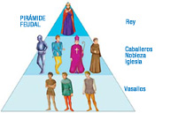

6.- Interfaces.
Caso práctico

María y Juan continúan con su tarea de desarrollo de clases para el proyecto de la Clínica Veterinaria. Ya han utilizado la herencia en diversas ocasiones e incluso han escrito alguna clase abstracta para luego generar clases especializadas basadas en ella.
Pero ahora se les ha planteado un nuevo problema: tienen pensadas algunas clases entre las que no existe ninguna relación de herencia, cada una hereda de unos ancestros diferentes que no tienen nada que ver, pero sin embargo, sí podrían compartir una buena parte de sus comportamientos (métodos). No es posible hacer que las dos hereden de la misma clase base porque hemos dicho que no se parecen en nada a ese respecto (cada una tiene su clase base, sin relación entre ellas), y tampoco pueden heredar de una nueva clase abstracta que contenga la interfaz de ese comportamiento, pues la herencia múltiple no está permitida en Java:
— ¿Qué hacemos entonces?, ¿repetimos la misma interfaz en las dos jerarquías de clases? No me cuadra tener que hacer eso. —le pregunta María a Juan.
— A mí tampoco. No me suena muy bien" —le contesta Juan.
— Así es. Tiene que haber una solución más elegante que no nos haga tener que repetir ese código una y otra vez. ¿Alguna idea?
— "Quizá exista una forma de resolver el problema. ¿Recuerdas que Ada nos habló el otro día de las interfaces?

Has visto cómo la herencia permite definir especializaciones (o extensiones) de una clase base que ya existe sin tener que volver a repetir de nuevo todo el código de ésta. Este mecanismo da la oportunidad de que la nueva clase especializada (o extendida) disponga de toda la interfaz que tiene su clase base.
También has estudiado cómo los métodos abstractos permiten establecer una interfaz para marcar las líneas generales de un comportamiento común de superclase que deberían compartir de todas las subclases.
Si llevamos al límite esta idea de interfaz, podrías llegar a tener una clase abstracta donde todos sus métodos fueran abstractos. De este modo estarías dando únicamente el marco de comportamiento, sin ningún método implementado, de las posibles subclases que heredarán de esa clase abstracta. La idea de una interfaz (o interface) es precisamente ésa: disponer de un mecanismo que permita especificar cuál debe ser el comportamiento que deben tener todos los objetos que formen parte de una determinada clasificación (no necesariamente jerárquica).
Una interfaz consiste principalmente en una lista de declaraciones de métodos sin implementar, que caracterizan un determinado comportamiento. Si se desea que una clase tenga ese comportamiento, tendrá que implementar esos métodos establecidos en la interfaz. En este caso no se trata de una relación de herencia (la clase A es una especialización de la clase B, o la subclase A es del tipo de la superclase B), sino más bien una relación "de implementación de comportamientos" (la clase A implementa los métodos establecidos en la interfaz B, o los comportamientos indicados por B son llevados a cabo por A; pero no que A sea de clase B).
Imagina que estás diseñando una aplicación que trabaja con clases que representan distintos tipos de animales. Algunas de las acciones que quieres que lleven a cabo están relacionadas con el hecho de que algunos animales sean depredadores (por ejemplo: observar una presa, perseguirla, comérsela, etc.) o sean presas (observar, huir, esconderse, etc.). Si creas la clase Leon, esta clase podría implementar una interfaz Depredador, mientras que otras clases como Gacela implementarían las acciones de la interfaz Presa. Por otro lado, podrías tener también el caso de la clase Rana, que implementaría las acciones de la interfaz Depredador (pues es cazador de pequeños insectos), pero también la de Presa (pues puede ser cazado y necesita las acciones necesarias para protegerse).